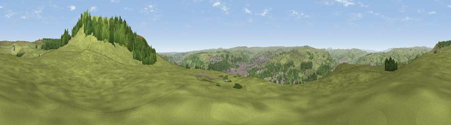

Viewpoint near Riddlesden
#11012 in England · top 10% of its area beats it · near RiddlesdenThe view, rendered

A 360° render of this exact spot computed from the terrain model, tree cover and land cover — summer colours, afternoon light, calibrated against photographs of famous viewpoints. Real trees, hedges and buildings will differ in detail.
The panorama
Grey silhouette: terrain skyline in each direction (720 bearings, Earth curvature and refraction included). Dashed green: skyline with trees (+15 m) and buildings (+8 m) as obstacles. Blue strip: how far the ground is visible on each bearing.
Where the view opens
Wedge length = distance to the farthest visible ground on that bearing (vegetation-aware). Rings at 10, 25 and 50 km.
What fills the view
65% grassland · 25% woodland · 10% built-up
Angular shares of the visible panorama (visual magnitude), not map area. Landscape diversity 0.38 (0–1 Shannon).
Key numbers
More beautiful places nearby
The staircase of upgrades: each row has a higher view potential than everything closer. Driving times are estimates from straight-line distance, calibrated against real road routing — check an actual route before setting out.
| Place | Direction | Drive | Score |
|---|---|---|---|
| Pinfold Hill | W · 1 km | ~2 min | 62.6 |
| Viewpoint near Riddlesden | E · 1 km | ~2 min | 67.5 |
| Viewpoint near Addingham | NNE · 3 km | ~7 min | 68.6 |
| Viewpoint near Addingham | N · 3 km | ~7 min | 68.9 |
| Beamsley Beacon | NNE · 9 km | ~17 min | 69.0 |
| Viewpoint near Baildon | ESE · 9 km | ~17 min | 70.4 |
| Viewpoint near Otley | E · 13 km | ~24 min | 77.5 |
| Viewpoint near East Witton | N · 41 km | ~61 min | 77.8 |
53.89596, -1.89763 · source: screening · position refined by local search. Computed location — check access rights before visiting.